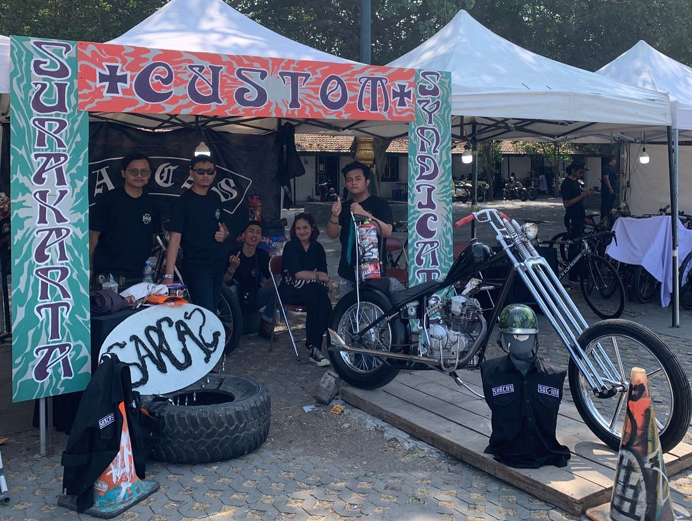
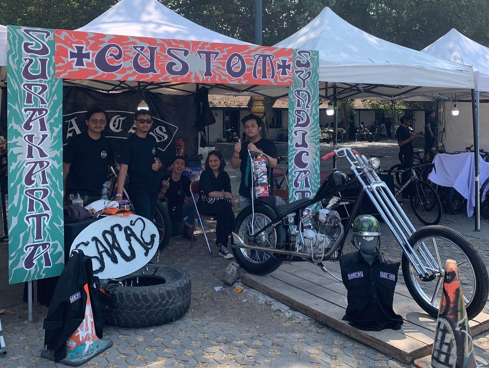
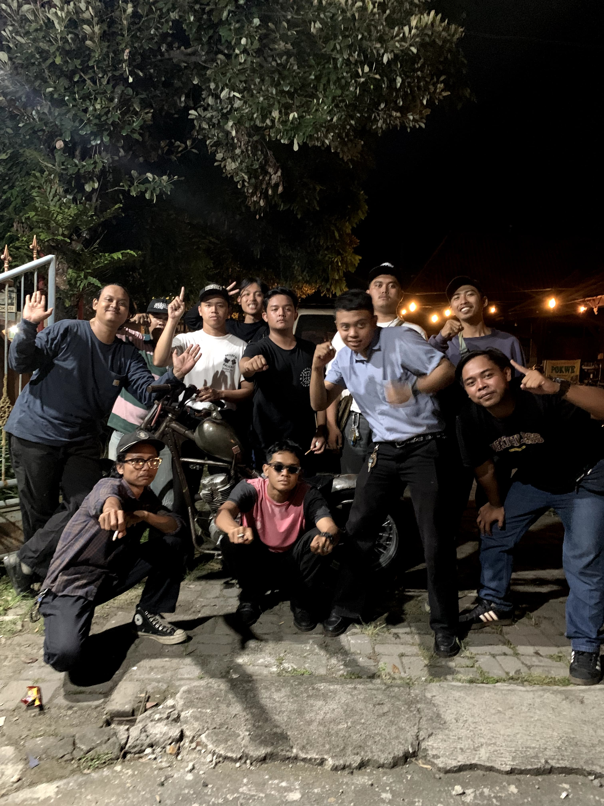
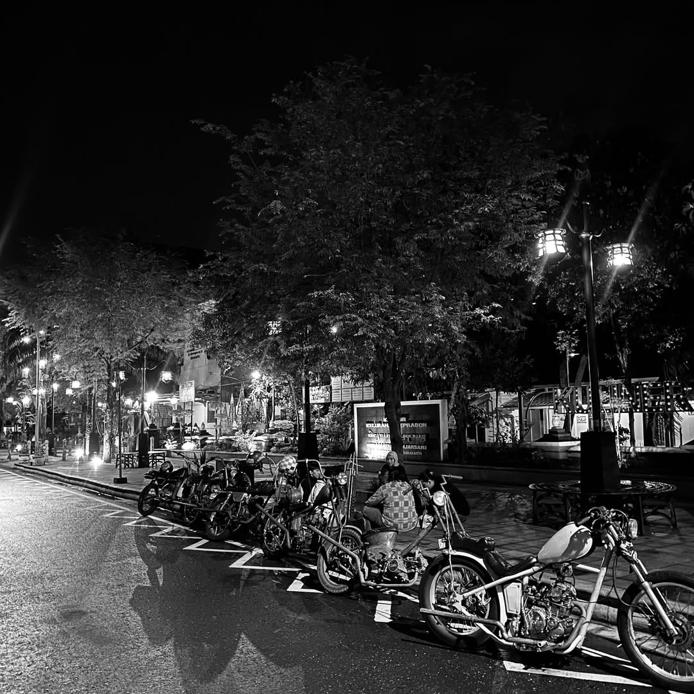
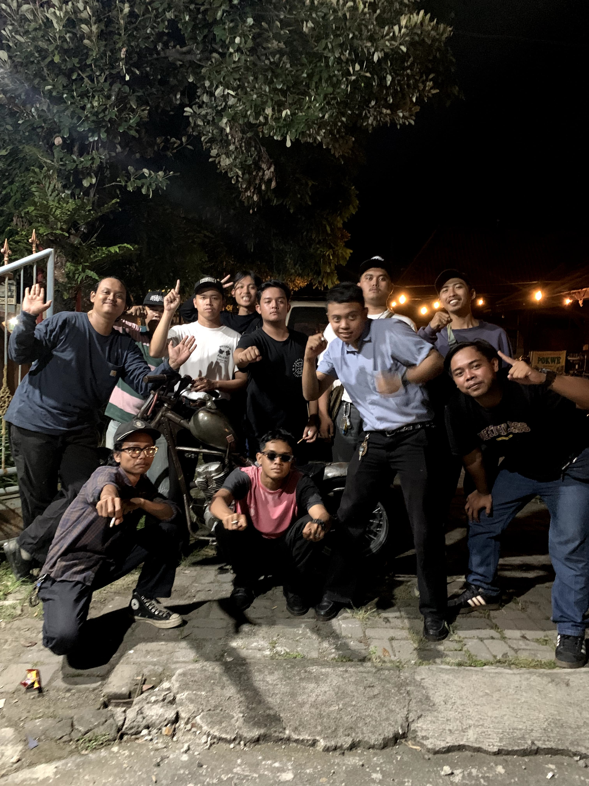
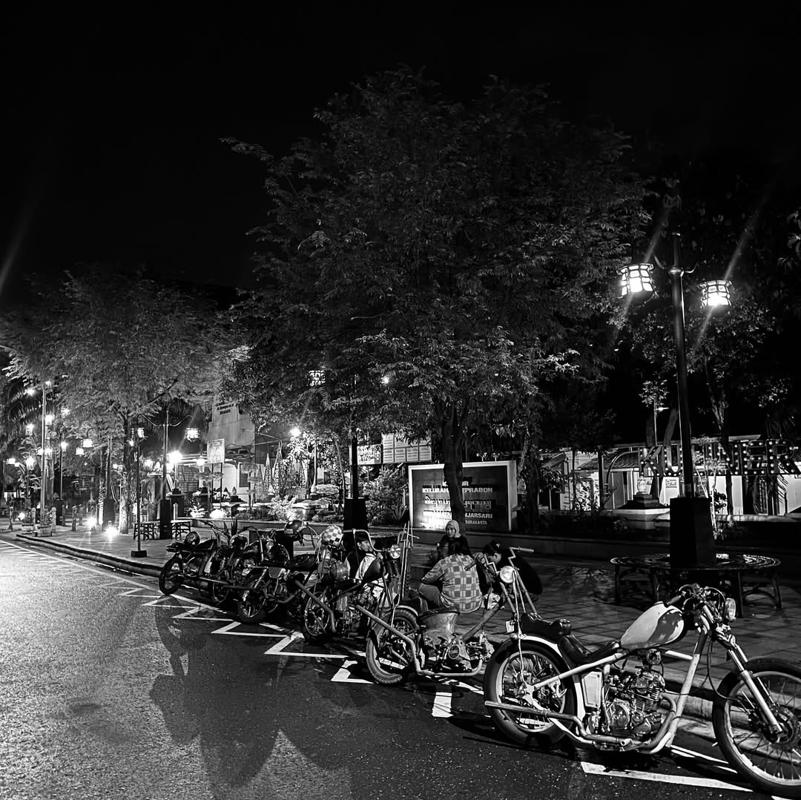
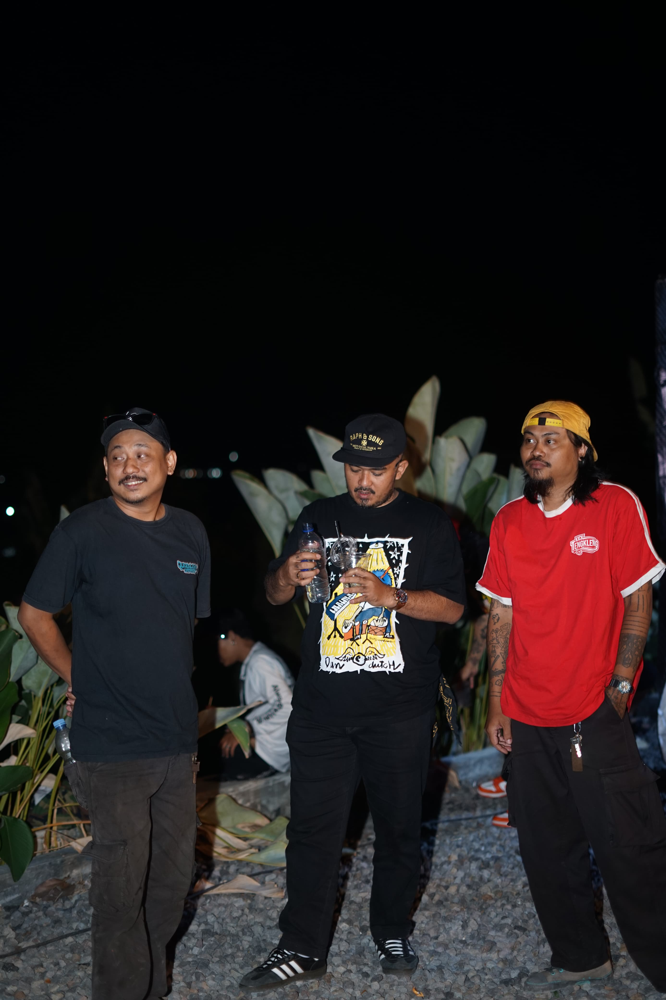
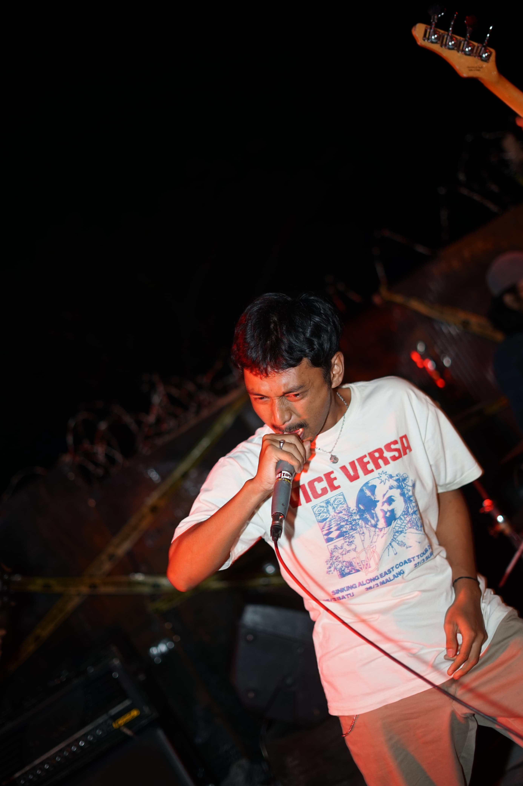
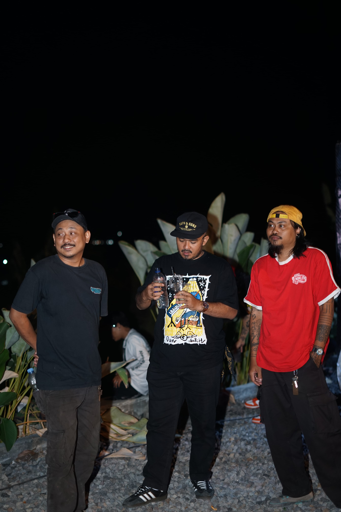
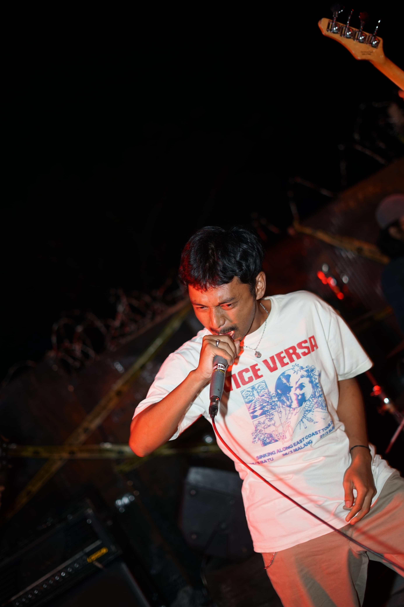

Surakarta Custom Syndicate(SARCAS)
SARCAS, didirikan padatahun 2018 oleh sekelompok anak muda Surakarta pecinta motor custom. Awalnya hanya beberapa orang yang berkumpul, kini tumbuh menjadi salah satu komunitas terkemuka di Surakarta. Bersama-sama, kami menciptakan ikatan kuat seperti keluarga, menjadikan jalan sebagai rumah kami. Kami aktif dalam acara motor di Surakarta dan sekitarnya, saling mendukung dalam komunitas. Visi kami adalah menjadi komunitas motor custom kreatif, inovatif, dan bersahabat, sementara misi kamiadalah mempromosikan budayacustom dan menghormati sesama pengendara motor di jalan. Kami berharap masyarakat dapat melihat kami dengan pikiran terbukadan tidak memandang sebelah mata. Itulah sedikit tentang keluarga kami, SARCAS (Surakarta Custom Syndicate).
Visi kami adalah menjadi komunitas motor custom kreatif, inovatif, dan bersahabat, sementara misi kami adalah mempromosikan budaya custom dan menghormati sesama pengendara motor di jalan. Kami berharap masyarakat dapat melihat kami dengan pikiran terbuka dan tidak memandang sebelah mata. Itulah sedikit tentang keluarga kami, SARCAS (Surakarta Custom Syndicate).
Portfolio
Ada beberapa event yang pernah kita buat atau pernah diundang selama bersama komunitas Surakarta Custom Syndicate:
- Burnout-2023
- Unlimited Party And Solidarity-4 Agustus 2024
- No Border Riding V 1 di beberapa kota-2024 hingga sekarang
- City Connecting di beberapa kota-2024 hingga sekarang
Media Gallery
Kegiatan komunitas kami dalam berbagai acara motor di Surakarta dan sekitarnya.
 

 





 


